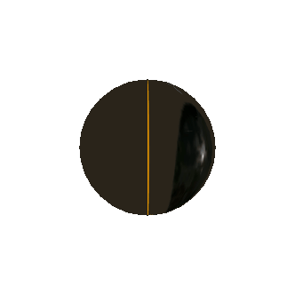
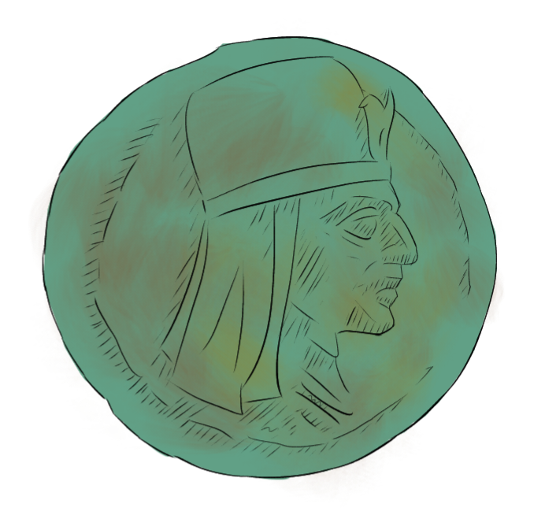
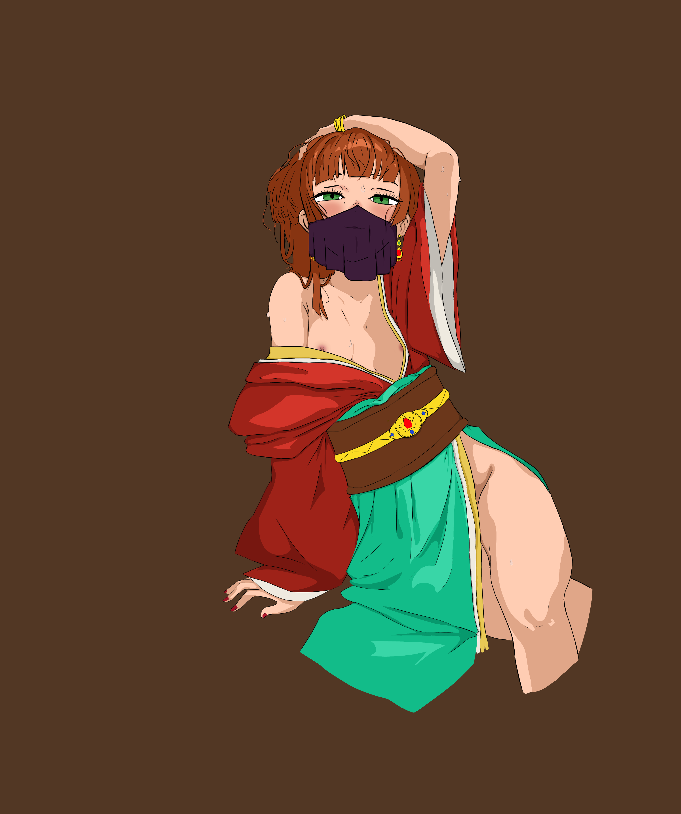
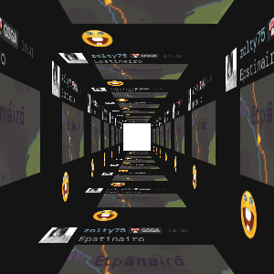

|
FORUM KARBOIŃSKIE (archiwum)
KARBOINMENCZYCY.PL - wersja andujska
EPILOG BADAŃ NAD GÓRSKIM LUDEM
STOWARZYSZENIE PRZYJACIÓŁ URŠAHA
KLUB BUŁAWNIKA
STOWARZYSZENIE - archiwum
REWITALIZACJA DUCHA GÓR
BIEŻĄCA KORESPONDENCJA Z ANDUJĄ
PUBLICYSTYKA GÓRSKA
CIEKAWOSTKI Z DOLIN
KOCHAJMY BUŁAWNIK
GAZETA KLANOWA
ODWIEDZIN: 676767   |
KARBOINCZYCY.PLDzieje, Podbój i Zapomnienie Ludu Gór — strona oficjalna
Szanowni Internauci
Dziękujemy za tak liczne odwiedziny naszej strony. Docierają do nas wiadomości z każdego zakątka świata — łącznie z tymi zakątkami, które jeszcze nie wiedzą, że istnieje coś takiego jak Karboinmene. Naszym nadrzędnym celem jest powstanie Muzeum Uršaha Wielkiego, finansowanego najlepiej przez kogoś innego niż my. Cała nizinne Adarum — łącznie z Andują — od wieków uczestniczy w przemilczaniu prawdy o góralach karboińskich, którzy jako jedyni w regionie nigdy nie zgodzili się nosić butów na płaskiej podeszwie. Dlaczego ich unicestwiono? Powód był prosty - nie mogła istnieć grupa wolnych ludzi, w już zniewolonym, feudalnym Adarum. Byłoby to precedensem dla zniewolonych. Cele były również polityczne. Tamta sytuacja, przypomina obecną o Nowym Porządku Świata z globalizacją na czele, już tragiczna w skutkach. Do tej pory działania nasze nie doprowadziły nawet do dialogu. Adarum zasłania się paragrafami prawa i biurokracji. W przygotowaniuCurrently under preparation. Prace trwają od 47 lat, tak jak panowanie Uršaha.  Pierwsza kompletna historia górskiego ludu, ze spisem klanów i herbarzem tamg, do nabycia we wszystkich księgarniach, które zgodziły się ją przyjąć pod przymusem towarzyskim. HISTORIA GÓR ANDUJSKICHPoniższy skrót jest podstawowym zbiorem informacji na temat góralskiego ludu i jego dziejów. Temat jest żywy, otwarty i — jak to w górach — czasem osuwa się pod naporem nowych interpretacji. To, co dziś wydaje się fikcją (na przykład istnienie Uršaha), jutro może okazać się fikcją jeszcze bardziej rozbudowaną.  film:
"Buławnik a Duch Narodu" „KARBOINMENE CZY ANDUJA?"Zaproszenie do lokalnej telewizji kablowej zaowocowało gorącą dyskusją na temat tego, kto tak naprawdę wynalazł góry. Świadom jestem, że sposób nauczania historii Karboinmene w szkołach nizinnych jest daleki od doskonałości — właściwie ogranicza się do jednego zdania: „tam było zimno i się kłócili".
NOWOŚCI:
Epitafium dla Śkherxów
Post Scriptum do Epitafium
Aûmentel z Irrenne — kronikarz czy plotkarz?
Zjazd Klanów 526 UC — zaproszenie
Sprostowanie ws. rzek czerwonych pod śniegiem
Gdzie jesteście, górale?
Wiatr niesie dym po dawnych szczytach
i echo kroków tych, co byli tu przed mapą. Kamienie pomną więcej niż kroniki, a kroniki pomną więcej niż sąsiedzi chcą przyznać. Gdzie jesteście, synowie przełęczy? Nizina zapomniała, że góra ma imię. Buławnik się pali, a pieśń jeszcze trwa — niechaj usłyszy ją i ten, kto nie wierzy w góry. — autor nieznany, prawdopodobnie ktoś z gór, lipiec (roku bliżej nieustalonego) Wystarczy wpisać w wyszukiwarkę „Ziemia Karboińczyków” a wyświetlą się punkty sprzedaży — o ile wyszukiwarka w ogóle wie, gdzie leży Karboinmene. |